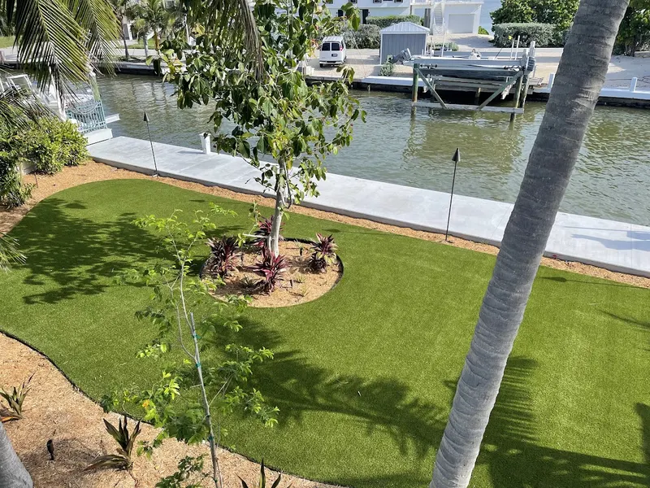
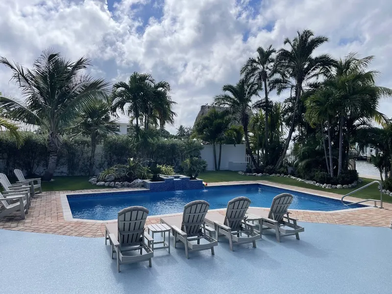
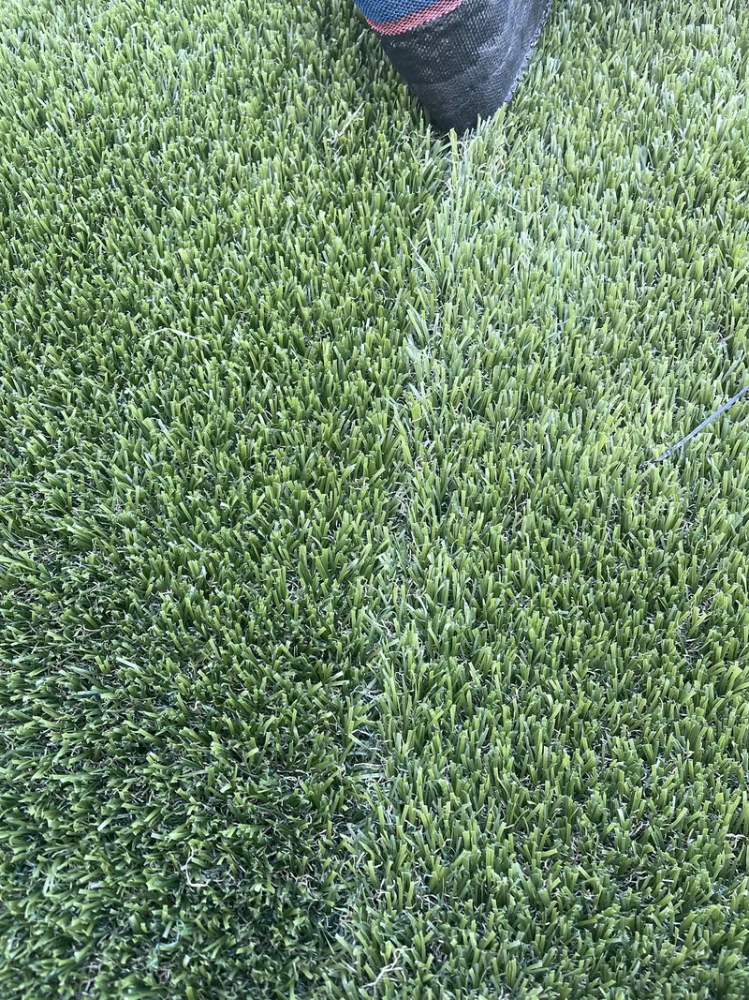
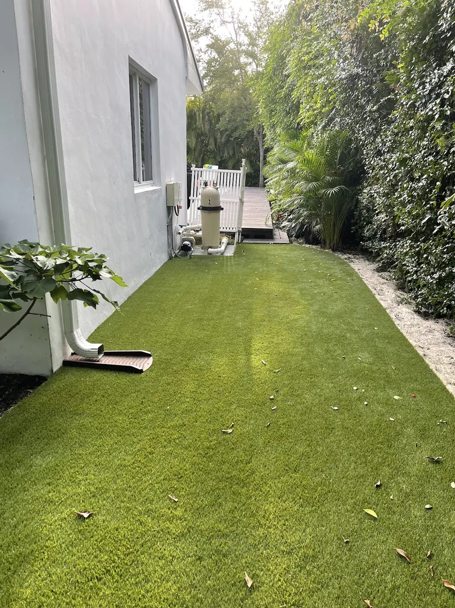

Turf in Bonita Springs.
Between Fort Myers and Naples, Bonita Springs yards range from golf communities to waterfront lots, both a natural fit for putting greens and pool-side turf.
AJ Turf installs artificial turf lawns, pet turf, putting greens and turf around pools and pavers for homes in Bonita Springs and across Lee County. Every job starts with a free onsite estimate: we measure in person and give you one exact written price.
HOAs and Florida law.
A 2025 Florida law (HB 683) directed the Florida Department of Environmental Protection to set statewide standards for synthetic turf on single-family lots of an acre or less. Those standards (Rule 62-308.100) took effect in May 2026, and local governments can't ban turf that meets them. Many HOAs still ask for architectural review before you install. We'll give you the product specs and install details your HOA usually asks for.
Built for this climate.
Every AJ Turf install is built the same way. We outline the area with 6-inch metal or plastic edging, pour a 3 x 3 x 3 inch concrete border along the inside of it, lay a weed barrier over everything, then glue the turf edges to the concrete with turf glue that carries a 15-year warranty.
Most installers pin turf down with 6-inch steel spikes driven through the whole lawn. Spikes work loose, can hurt bare feet and paws, and tear the backing over time. A glued edge is safer and lasts longer.
Turf in full summer sun does get hotter than grass. We'll bring samples and talk through shade, product choice and placement before you decide.
Real jobs.
Drag to see more →



Good to
know.
How do you price a yard?
In person. We measure on site and give you one exact written price, and the estimate is free. Turf comes in 15-foot-wide rolls, so every quote includes a standard allowance for cuts around your yard's shape.
How long does an install take?
About two days for every 1,000 square feet, depending on the site.
How do payments work?
30% to put your install on the schedule, 35% on the first day on site, and the last 35% when the job is done and you've walked it with us.
Why a concrete border instead of spikes?
Spikes driven through a lawn can work loose, hurt bare feet and paws, and tear the turf backing. Gluing the turf edge to a poured concrete border holds it down without anything sticking up, and it lasts longer.
What happens to my sprinklers?
Existing sprinkler heads are capped and left in place, not ripped out. That keeps your system intact, and a quick run of water is an easy way to rinse and cool the turf on hot days.
What's the warranty?
Turf carries the manufacturer's warranty for the product you choose (8, 16 or 25 years depending on the product), covering UV stability and strength; installation is covered by AJ Turf's 1-year labor warranty. You'll see the exact warranty for your product before you sign.